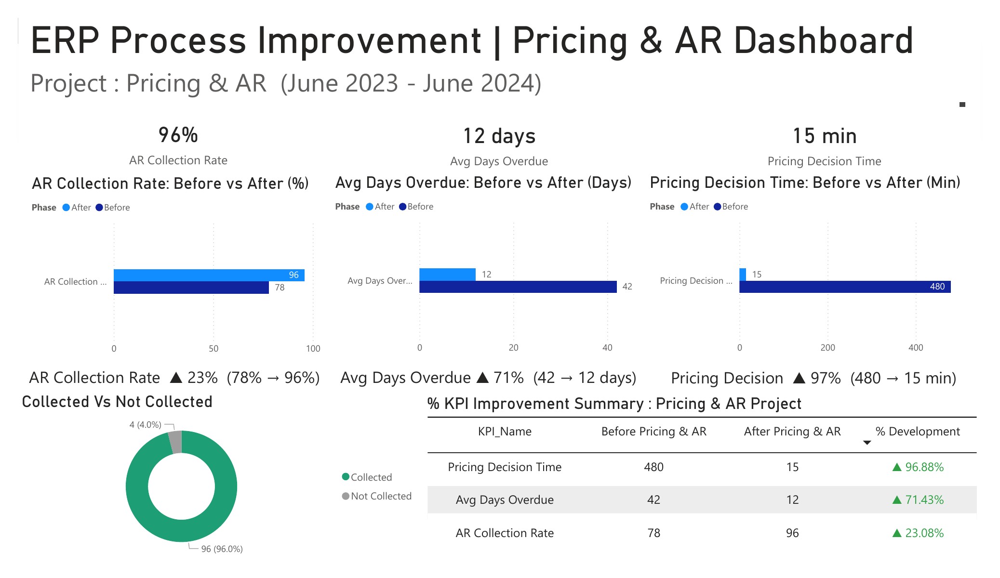

Attended 48 weekly Executive Sessions over 12 months as the sole consultant: I extracted multi-tier pricing decision logic from live 1-on-1 family advisory sessions and translated findings into a structured Functional Specification Document for the XeerSoft development team.

Tuition fee pricing was managed ad-hoc per family by the school owner. No structured pricing model existed in the system: discounts varied by family size, commitment horizon, and academic profile but were only held in the owner's knowledge.
· Pricing decisions took 480 minutes (8 hours) on average: each new family required the owner to mentally recalculate from scratch
· AR collection at 78%: manual tracking with no systematic overdue follow-up
· Knowledge concentrated in one person: no way to scale or delegate pricing decisions
The hardest part wasn't building the system: it was extracting tacit pricing knowledge from the owner's head. I volunteered to attend weekly Executive Sessions every Sunday for 12 months (4 hours each, 48 sessions total) as the sole consultant to do so consistently.
In each session, I observed live 1-on-1 family advisory conversations, noted the variables that influenced the owner's pricing decisions, and progressively built a structured model. After 6 months of observation, I had identified three core pricing variables that explained nearly every historical decision.
1. Family enrolment size & tenure: How many children currently enrolled, and for how long
2. Parent commitment horizon: 1-year vs 2-year contract commitment
3. Student academic tier: Standard vs Advanced premium track
Pricing and AR process as configured in XeerSoft: module → function paths, no transaction codes.
| # | Process Step | XeerSoft Module → Function |
|---|---|---|
| 1 | Define multi-tier condition types | Pricing › Condition Setup |
| 2 | Enter discount records per tier | Pricing › Price / Discount List |
| 3 | Pricing → Accounting integration | Financial Accounting › Revenue Account Mapping |
| 4 | Monitor AR open items per family | Financial Accounting › AR Open Items |
| 5 | 3-level dunning run | Financial Accounting › Overdue / Dunning |
| 6 | Clear customer payment | Financial Accounting › Payment Matching |
The pricing and AR business rules I authored in the FSD and submitted to the XeerSoft development team.
An interactive simulation that runs the FSD logic above directly in your browser: it reproduces the specified behaviour I designed, not the proprietary XeerSoft UI.
Pricing conditions
Family-size discount · FSD-P2-01
AR / Revenue posting
AR open item
Bucketed per FSD-P2-02; each bucket triggers the matching dunning level.
Dunning decision
On XeerSoft Cloud ERP I worked as Functional Consultant / Business Analyst, owning requirements, configuration, FSD authoring, UAT and defect management. The custom logic below was implemented by XeerSoft’s in-house development team against my specifications.
The pseudocode shown is the specified expected behaviour (my FSD deliverable), not vendor source code, and deliberately platform-neutral so it reads the same to a XeerSoft or an SAP reviewer.
How the project was actually run end-to-end: the timeline and where it was at risk, how I specified the build for the developers and verified it, the weekly Agile cadence, and the stakeholder network I coordinated as the single point of accountability.
Every month without a pricing system meant the owner re-deriving each family quote from scratch and inconsistent discounts leaking margin. The hardest schedule risk was the open-ended discovery of tacit knowledge (pricing logic that lived only in the owner’s head) which could have run indefinitely.
Project timeline · month-by-month
Schedule risk & recovery
Six months of weekly sessions could have continued forever without ever producing a buildable spec; tacit knowledge resists deadlines. Resolved → I set a hard synthesis checkpoint at month 6, forced convergence to 3 measurable pricing variables, and only then opened the build phase, turning an infinite discovery into a finite spec.
All pricing authority sat with one person; that is both the source of the tacit knowledge and a delivery bottleneck. Resolved → Post Go-Live, admin staff can now generate accurate quotes from the system without the owner: the dependency was designed out.
Spec design → developer handoff → build verification
How I spec for developers
How I verify the build (functional, not source-code review)
Weekly Agile cadence
Executive pricing session (4 hr)
Synthesise notes → variables
FSD / build review with dev
Test pricing scenarios
Log + sign-off
Stakeholder network & RACI
| Stakeholder | Count | Their part | RACI |
|---|---|---|---|
| You · BA/Consultant | 1 | Discovery, FSD, config, UAT lead | A / R |
| School owner | 1 | Pricing decision authority; sponsor | A / C |
| Admin staff | several | Generate quotes post Go-Live | I / R |
| Families | many | Subjects of the pricing & AR | I |
| XeerSoft dev team | remote | Built pricing/dunning logic from FSD | R |
A 12-month project sustained by one consultant volunteering for 48 Sunday sessions: I was the only person translating the owner’s tacit pricing logic into a system the whole admin team could run.
The three variables were mapped into structured pricing conditions within XeerSoft. Each variable has scale-based discount logic with clear thresholds.
Conducted 4 UAT sessions in May 2024 across multiple family profiles and edge cases: verified system behaviour against business rules for every scenario from single-child standard to 4-child advanced track with mixed payment terms.
Go-live June 2024: executives now drive all pricing decisions from system data, replacing ad-hoc per-family negotiation entirely. The shift from intuition to system also enabled delegation for the first time: admin staff can now generate accurate quotes without involving the owner.
The biggest learning was that BA work isn't just documenting what people say: it's pattern recognition over time. The owner couldn't have told me the three pricing variables on day one because she didn't consciously know them. The model emerged from observing 48 sessions and looking for the invariants underneath case-by-case decisions.